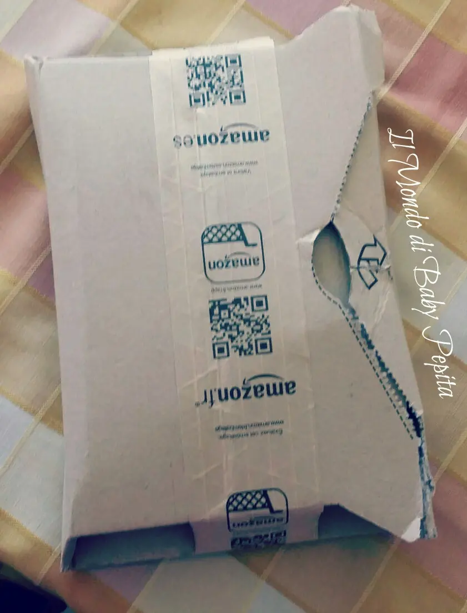
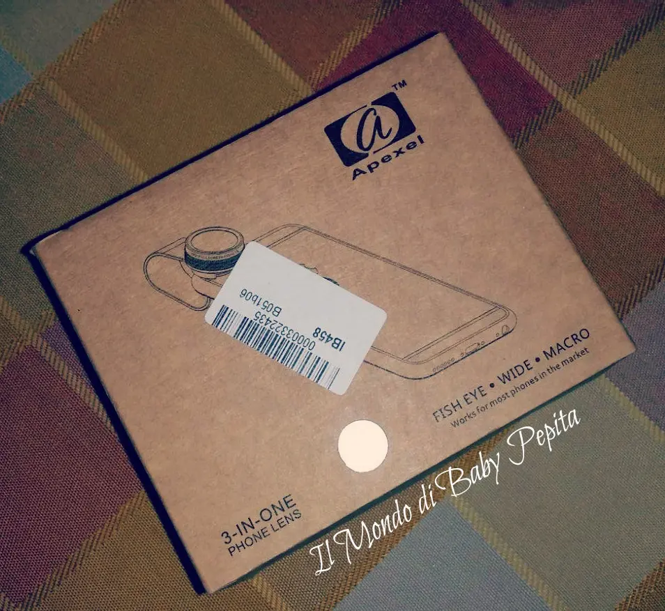
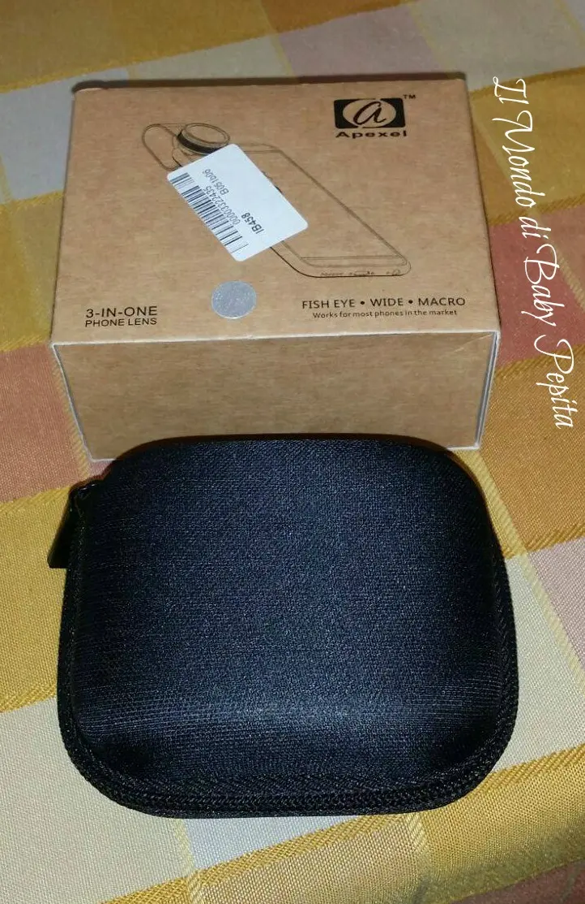
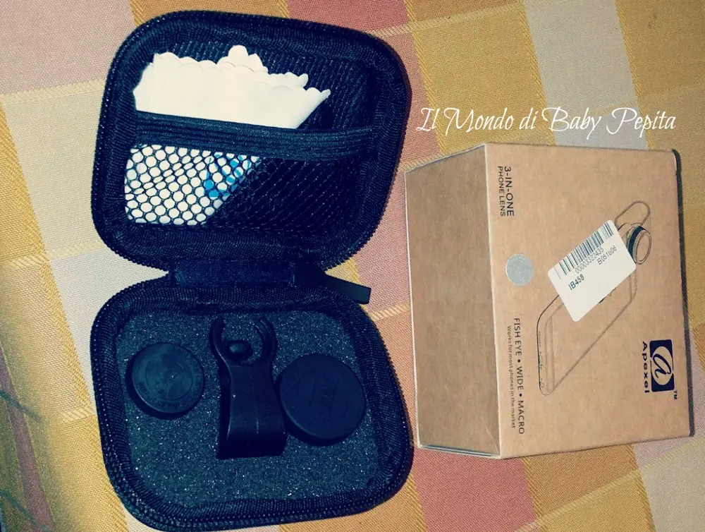
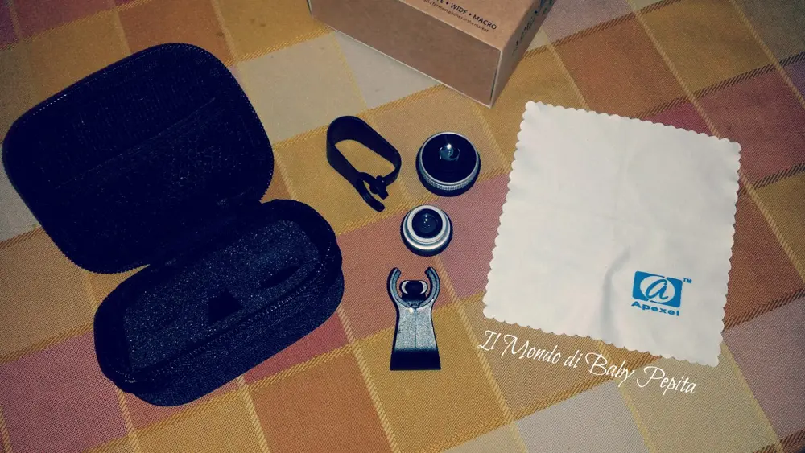
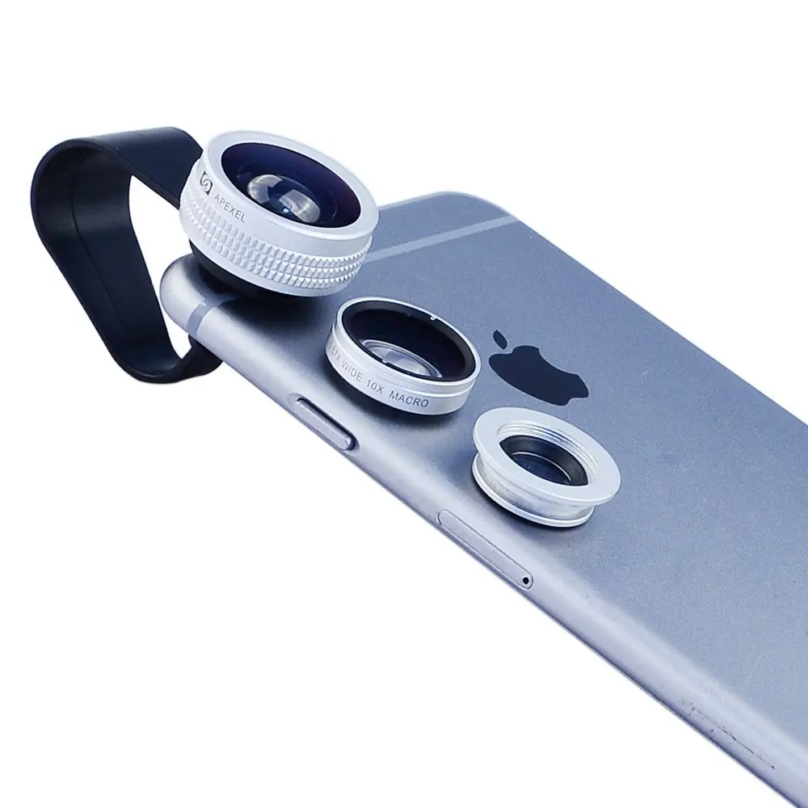

TopBrandBoxIT - 3 in 1 Obiettivo per cellulare
Hola fanciulle.In questo caldo sabato pasquale vi propongo oggi un accessorio che sarebbe utile a tutti quelli che possiedo un telefono cellulare che faccia foto. .
Come avete già letto dal titolo un obiettivo. .Inviatomi dal venditore TopBrandBoxIT di Amazon. .Date le prime dovute spiegazioni passo direttamente a spiegarvi ed a farvi vedere le foto.

Il pacchetto è arrivato come sempre ben impacchettato (scusate se lo vedete già quasi scartato, ma era la fretta di vedere hahahah)
Impeccabile comunque come solitamente lo è Amazon

A primo impatto, ma anche dopo un giorno sinceramente, sarà la mia ignoranza su ste cose boh, non avevo ancora capito però come si usassero questi obiettivi. .Con l'aiuto della descrizione sul sito e di mio cognato abbiamo capito per bene come si mettessero a fuoco le inquadrature. .Aperta parentesi per questa mia breve figuraccia passiamo avanti ahahahahahah

Aprendo la scatolina troviamo questo astuccio rigido e molto comodo per tenere le lenti ben protette dalla polvere

all'interno dell'astuccio c'è un divisore in spugna che serve per collocare le lenti ognuno nei propri spazi e in dotazione c'è anche il panno per la pulizia degli obiettivi.
Colore delle lenti: Argento

Come da titolo abbiamo 3 obiettivi in 1 ovvero: un obiettivo di 180 gradi suprema fisheye che ci permette di godere la qualità delle immagini in generale.Poi c'è l'obbiettivo 0.65X che ci permette di catturare immagini chiare a tutto schermo. Facendo un allontanamento dell'immagine per farsì che si veda tutta la visuale che abbiamo davanti a noi.È presente anche il macro obbiettivo 10X che ci permette di fotografare oggetti molto piccoli ad una distanza riavvicinata.Il 0.65X e il 10X sono 2 in 1,e per usarne soltanto uno basta svitarlo.Infine c'è quello da 2X extender che permette di mettere a fuoco e ad avere quindi una visione ancora più chiara.

0,67X grandangolo: Si può registrazione più grande zona di paesaggio Angolo: 75° Ingrandimento: 0,67X Struttura dell'obiettivo: 2 elementi 2 gruppi Diametro massimo: 20mm Lunghezza: 11mm Obiettivo macro 10X: Si può riprendere foto chiara per oggetto piccolo Ingrandimento: 10X Distanza minima: 10-15mm Struttura dell'obiettivo: 1 elemento 1 gruppo Diametro massimo: 20mm Lunghezza: 6mm 180° Fisheye (senza angolo oscuro): Grandangolo 180°, potrebbe catturare paesaggio tramite fisheye obiettivo ed aiutarla a godere un modo fantastico Angolo: 175-180°Ingrandimento: 0,33X Struttura dell'obiettivo: 3 elementi 3 gruppi Diametro massimo: 25mm Lunghezza: 15mm Misura del clip: 40 x 20 mm (lunghezza x larghezza)